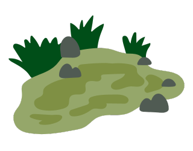

Poluições
CLIQUE NO ÍCONE ACIMA PARA ESCOLHER
Poluição Terrestre
A Poluição do Solo é toda e qualquer mudança em sua natureza (do solo), causada pelo contato com produtos químicos, resíduos sólidos e resíduos líquidos, os quais causam sua deterioração ao ponto de tornar a terra inútil ou até gerar um risco a saúde.
Altamente degradável, o solo é um meio bastante afetado pela pressão antrópica. Sua poluição afeta particularmente o nível superficial da crosta terrestre, camada da biosfera que abriga considerável biodiversidade.
A poluição do solo ocorre devido os malefícios diretos e indiretos causados pela desordenada exploração e ocupação do meio ambiente.
Depositar no solo elementos químicos estranhos prejudica as formas de vida microbiológica e sua colaboração em relação às interações ecológicas regulares.
As principais causas da poluição do solo são: o acúmulo de lixo sólido, como embalagens de plástico, papel e metal, e de produtos químicos, como fertilizantes, pesticidas e herbicidas.

Poluição Atmosférica
A poluição do ar ou atmosférica pode ser definida como o resultado do despejo na atmosfera de grandes quantidades de partículas, sólidas ou líquidas, que tenham potencial de causar impactos ambientais ou prejuízo à saúde humana.
Existem duas forma de causar a poluição do ar, sendo através de fontes naturais ou por ações humanas que causam os maiores prejuízos à atmosfera.
A poluição do ar é a presença de substâncias provenientes de atividades humanas ou da própria natureza
O ar poluído pode causar sérios problemas ao homem e a outros seres, portanto, ele é impróprio e nocivo.
A atividade das indústrias gera diversos tipos de resíduos poluentes que podem ser lançados nos rios e no mar. Além do vazamento na fase de exploração.
Poluição Hídrica

Os responsáveis por esse tipo de poluição são os lançamentos de objetos industriais, agrícolas, comerciais e esgotos domésticos, além de resíduos sólidos diversos.
A contaminação da água também ocorre pelos resíduos de aterros sanitários mal instalados, lixões a céu aberto e lançamento de esgoto doméstico nas águas.
A poluição hídrica corresponde ao processo de poluição, contaminação ou deposição de rejeitos na água dos rios, lagos, córregos, nascentes, além de mares e oceanos.
É um problema socioambiental grave, por que a água é um recurso natural renovável, mas ela pode ficar mais escassa.
A atividade das indústrias gera diversos tipos de resíduos poluentes que podem ser lançados nos rios e no mar. Além do vazamento na fase de exploração.
